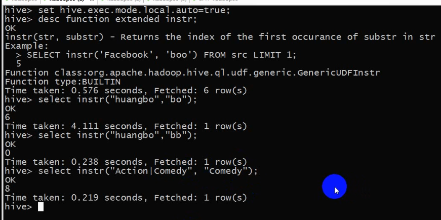

现有如此三份数据：
1、users.dat 数据格式为： 2::M::56::16::70072
对应字段为：UserID BigInt, Gender String, Age Int, Occupation String, Zipcode String
对应字段中文解释：用户id，性别，年龄，职业，邮政编码
2、movies.dat 数据格式为： 2::Jumanji (1995)::Adventure|Children's|Fantasy
对应字段为：MovieID BigInt, Title String, Genres String
对应字段中文解释：电影ID，电影名字，电影类型
3、ratings.dat 数据格式为： 1::1193::5::978300760
对应字段为：UserID BigInt, MovieID BigInt, Rating Double, Timestamped String
对应字段中文解释：用户ID，电影ID，评分，评分时间戳
题目要求：
数据要求：
（1）写shell脚本清洗数据。（hive不支持解析多字节的分隔符，也就是说hive只能解析':', 不支持解析'::'，所以用普通方式建表来使用是行不通的，要求对数据做一次简单清洗）
（2）使用Hive能解析的方式进行
Hive要求：
（1）正确建表，导入数据（三张表，三份数据），并验证是否正确
drop table if exists users;
create table users(UserID BigInt, sex String, Age Int, Occupation String, Zipcode String)
row format serde 'org.apache.hadoop.hive.serde2.RegexSerDe'
with serdeproperties('input.regex'='(.*)::(.*)::(.*)::(.*)::(.*)','output.format.string'='%1$s %2$s %3$s %4$s %5$s')
stored as textfile;
load data local inpath '/home/hadoop/moviedata/users.dat' INTO TABLE users;
select * from users limit 5;
drop table if exists movies;
create table movies(MovieID BigInt, Title String, type String)
row format serde 'org.apache.hadoop.hive.serde2.RegexSerDe'
with serdeproperties('input.regex'='(.*)::(.*)::(.*)','output.format.string'='%1$s %2$s %3$s')
stored as textfile;
load data local inpath '/home/hadoop/moviedata/movies.dat' INTO TABLE movies;
select * from movies limit 5;
drop table if exists ratings;
create table ratings(UserID BigInt, MovieID BigInt, rate Double, ts String)
row format serde 'org.apache.hadoop.hive.serde2.RegexSerDe'
with serdeproperties('input.regex'='(.*)::(.*)::(.*)::(.*)','output.format.string'='%1$s %2$s %3$s %4$s')
stored as textfile;
load data local inpath '/home/hadoop/moviedata/ratings.dat' INTO TABLE ratings;
select * from ratings limit 5;
（2）求被评分次数最多的10部电影，并给出评分次数（电影名，评分次数）
思路：
1、统计出电影的评分次数，要去ratings表统计
ratings有四个字段： userid, movieid, ts, rate
按照movieid分组（但是title字段和movieid也是一对一的，所以也可以按照title分组）
按照userid计数
2、要给出电影名
所以要使用movies表，movies有三个字段 ： movieid, title, type
我们要的就是title字段，所以肯定要用join
3、求出最多的10部电影
order by totalNumber desc
limit 10;
最终SQL ：
drop table step2;
create table step2 as select b.title as title, count(distinct userid) as totalNumber
from ratings a join movies b on a.movieid = b.movieid group by b.title order by totalNumber desc
limit 10;
（3）分别求男性，女性当中评分最高的10部电影（性别，电影名，影评分）
思路：
1、首先要确定性别，即确定评分到底是男性评的还是女性评的：
users ： userid, sex, age , occupation, zipcode
分别求男性和女性，即在每一个sql语句中，都添加判断性别的一个条件。 如where sex = 'F'
2、评分最高的10部电影
先求出所有电影的 评分（即每部电影所有人评论的评分的平均分）
再order by avgrate desc;
limit 10;
3、怎么求每部电影的平均评分？
按照movieid（或title）分组
avg(rate)
最终的SQL的编写：
create table step3_f as select c.title as title, b.sex as sex, avg(a.rate) as avgrate
from ratings a join users b on a.userid = b.userid join movies c on a.movieid = c.movieid
where sex = 'F'
group by b.sex, c.title
order by avgrate desc
limit 10;
create table step3_m as select c.title as title, b.sex as sex, avg(a.rate) as avgrate
from ratings a join users b on a.userid = b.userid join movies c on a.movieid = c.movieid
where sex = 'M'
group by b.sex, c.title
order by avgrate desc
limit 10;
如果要求用一个SQL语句求： 则需要使用 row_number()
（4）求movieid = 2116这部电影各年龄段（因为年龄就只有7个，就按这个7个分就好了）
的平均影评（年龄段，影评分）
解题思路：
1、各年龄段
当前的users表中的 所有用户的 不同的年龄的个数，总共就只有7 个。所以干脆就按照这7个年龄进行划分，即只需group by age 即可
2、需要给出的结果字段：
年龄段
评分（平均评分，avg（rate））
最终的SQL ：
create table step4 as select b.age as age, avg(a.rate) as avgRate
from ratings a join users b on a.userid = b.userid
where a.movieid = 2116
group by b.age;
（5）求最喜欢看电影（影评次数最多）的那位女性评最高分的10部电影的平均影评分（观影者，电影名，影评分）
解题思路：
1、最喜欢看电影女性： 即评分次数最多的“女性”
怎么统计？
按照userid分组
按照movieid计数并记录为 totalNumber
where sex = 'F'
而评分在ratings表，性别则在users表，所以需要join
2、那位女性
totalNumber最大的值所对应的那个userid
由上面两步即可得出第一个SQL : 只求userid
select userid from
(select a.userid, count(a.movieid) as movieNumber
from ratings a join users b on a.userid = b.userid
where b.sex = 'F'
group by a.userid
order by movieNumber desc
limit 1) aa;
而下面这种写法是错误的，因为聚合函数不能放在order by 后面
select a.userid
from ratings a join users b on a.userid = b.userid
where b.sex = 'F'
group by a.userid
order by count(a.movieid) desc
limit 1;
3、那位女性评分最高的10部电影
当前这个userid评分最高的10部电影
则根据第三步第二个SQL语句则可以写成：
//“？”处就是写第一个的sql语句
select rate, movieid from ratings where userid = ？ order by rate desc limit 10;
另一种写法是：（这种写法的目的是为了得到title，最后结果显示为电影名而不是电影id，后面的第三个sql也将采用此写法）
select b.title as title, a.movieid as movieid from ratings a join movies b on a.movieid = b.movieid where userid = ？order by rate desc limit 10;
注意区别对待group by 和 order by
group by的执行 是 在 select 之前
order by的执行 是 select 之后
所以order by后面接的可以是select语句中定义的别名，而group by 则不可以
还有，order by后面跟的字段还必须是select后面跟的字段中的一个或多个，也就是说order by后面的字段必须是查询出来的字段 ，只有要查询出来的字段才会进行排序（当然这是说在hive中，在mysql中就没有这种限制，毕竟hive是为大数据考虑的，查了的才排序，不查的不排序）
4、当前这个10部电影的平均影评分
由第四步得到第三个SQL语句：（“？？”处就是写第二个的select语句）
create table step5 as select c.title as title, avg(a.rate) as avgrate
from ratings a join (？？) c
on a.movieid = c.movieid
group by c.title;
（6）求好片（评分>=4.0）最多的那个年份的最好看的10部电影
解题思路：
1、好片
该电影的影评分 >= 4.0
2、求出每部电影的上映年份
title中有个字段title后面包含了上映年份 ： Metropolitan (1990)
由第1和第2步，得 第一个SQL语句： 求出每部电影在哪一年上映，以及它的评分
create table step6_1 as
select b.title as title, substring(b.title, -5, 4) as year, avg(a.rate) as avgrate
from ratings a join movies b on a.movieid = b.movieid
group by b.title, substring(b.title, -5, 4);
3、 按照year分组
按照好片计数，记为number
按照number数排降序
limit 1 取year，也就是取出好片最多的那一年
由第3步，得 第二个SQL语句：
create table step6_2 as
select a.year as year, count(*) as totalNumber
from step6_1 a
where a.avgrate >= 4.0
group by a.year
order by totalNumber desc
limit 1;
4、按照year作为筛选条件 求出 该年中 最好看的 10 部电影
由第4步，得 第三个SQL语句：
select * from step6_1 where year = （select year from step6_2） order by avgRate desc limit 10;
有一个需要注意的地方：
该 10 部电影有没有可能不全都是好片？有可能, 所以有电影低于4.0的也不要惊讶
（7）求1997年上映的电影中，评分最高的10部Comedy类电影
解题思路：
1、两个过滤条件：
where year = 1997
where type = "comedy"
2、求出每一部电影的评分
先求出一个step7_1 表： year, movieid, title, avgrate
然后和movies表做连接,得到这些字段 : type title movieid
由第2步,先得到step7_1表:
create table step7_1 as
select b.movieid as movieid, b.title as title,
substring(b.title, -5, 4) as year, avg(a.rate) as avgrate
from ratings a join movies b on a.movieid = b.movieid
group by b.movieid, b.title, substring(b.title, -5, 4);
再结合第1步,得最终的SQL语句：
select a.year as year, a.title as title, a.avgrate as rate
from step7_1 a join movies b on a.movieid = b.movieid
where a.year = 1997 and instr(lcase(b.type), "comedy") > 0
order by rate desc limit 10;
instr()的作用是看字符串str是否包含子串substr,若包含,返回该子串所在的str的起始位置, 否则返回0;

lcase()的作用是将所有英文字母转为小写

（8）该影评库中各种类型电影中评价最高的5部电影（类型，电影名，平均影评分）
解题思路：
1、各种类型
即按照类型分组
2、评价最高的5部电影
按照评分排序（每一组中排序）
每组中评分最高的5部,则要使用row_number编号序号才行
row_number() over (distribute by type sort by avgrate desc) as idx
3、真正取前五的电影(topN)
where idx <= 5;
最终需要查询的字段：类型，电影名， 评分
先求表step8_1 ： movieid, title, type
因为step7_1中有 ： year, movieid, title, avgrate, 所以可以使用join来得到step8_11
得到的是所有不同类型的电影的评分表step8_11 : year, movieid, title, avgrate, type
然后通过8_11再使用row_number得到表step8_2
最终只需要查一下表step8_2并加上where idx <= 5;即可
思路：
先求 step8_1
再求 step8_11
再求 step8_2
最后执行：select * from step8_2 where idx <= 5;
为了得出step8_1, 若写成:
create table step8_1 as
select a.year, a.movieid, a.title, a.avgrate, b.type
from step7_1 a join movies b on a.movieid = b.movieid; XXXXXXX
那么上面这种思路是错误的
因为一个电影可能有多个type,所以同一个电影可能分到多个组里,所以不能直接按照type分组,
正确思路： 要把一个属于多种类型的电影拆分成多条记录，有多少个类型，就拆分成几条
也就是说,要把一条记录变成多条记录, 把一条记录转换成多条记录， 就要用到函数当中的 UDTF 函数 ： 表格生成函数 explode
下面这种explode函数的用法是正确的:
select explode(array("a","b","c")); √√√√√√√√
但是想要得到下面这种样式的结果
1 a
1 b
1 c
若通过下面这种方式是会报错的:
select "1", explode(array("a","b","c")); xxxxxxxx
这个时候就需要采用别的办法了,这个方法就是:
改写SQL ： lateral view 虚拟视图(有点类似于虚表)
最终的SQL ：
create table step8_1 as
select movieid, title, mt.movietype
from movies lateral view explode(split(type, "\\|")) mt as movietype; √√√√√√√
其中,split(type, "\\|")是将type按"|"分隔切割成一个数组,explode再把数组由一行变成多行,lateral view 是?
create table step8_11 as
select a.year, a.movieid, a.title, a.avgrate, b.movietype as type
from step7_1 a join step8_1 b on a.movieid = b.movieid ; √√√√√√√
create table step8_2 as
select year, movieid, title, avgrate, type,
row_number() over (distribute by type sort by avgrate desc) as idx
from step8_11; √√√√√√√
select * from step8_2 where idx <= 5; √√√√√√√
（9）各年评分最高的电影类型（年份，类型，影评分）
解题思路：
1、分组并每组取前1
按照 年 分组
按照 电影的类型的评分 排序
2、电影的类型的分
就是该类型下所有电影的平均分
3、基于第八题的step8_11 去做
step8_11 : year, movieid, title, avgrate, type
第一步： 求出所有类型的 评分
思路： 按照 year, type 分组， 按照 avg(avgRate) 做聚合
step9_1 : year, type, rate
create table step9_1 as
select year, type, avg(avgrate) as rate
from step8_11
group by year, type;
第二步：
需求： 求得每年当中的评分最高的电影的类型
解题思路：
1、按照 年 分组
2、每一组当中的所有电影类型，都按照类型的评分排降序
3、利用row_number这个窗口函数就能得出每一组中的任何记录在该组中的排序的序号
4、根据一个过滤条件 where idx = 1 就能求出每年中的评分最高的电影的类型
SQL ：
step9_2 : year, type, rate , idx
create table step9_2 as
select year, type, rate,
row_number() over (distribute by year sort by rate desc) as idx
from step9_1;
select * from step9_2 where idx <= 3;
（10）每个地区最高评分的电影名，把结果存入HDFS（地区，电影名，影评分）
HDFS目录: /zipcode/movie/
解题思路：
1、每个地区
每一个不同的邮编就是一个不同的地区
把电影的movieid, rate, userid , zipcode
分组：
按照 zipcode, movieid
聚合： avg(rate)
step10_1 : zipcode, movieid, avgrate
SQL :
create table step10_1 as
select a.movieid, b.zipcode, avg(a.rate) as avgrate
from ratings a join users b on a.userid = b.userid
group by a.movieid, b.zipcode;
2、先求出每个地区的每部电影在该地区的评分的排名
SQL :
create table step10_2 as
select zipcode, movieid, avgrate,
row_number() over (distribute by zipcode sort by avgrate desc) as idx
from step10_1;
3、根据排名作为过滤条件来进行删除
where idx = 1;
insert overwrite directory "/zipcode/movie/"
select * from step10_2 where idx = 1;
真正的重点：
1、编写SQL的思路
2、explode
3、over
标准的语法结构：
统计分析函数 over (distribute by col sort by col1, col2 desc)